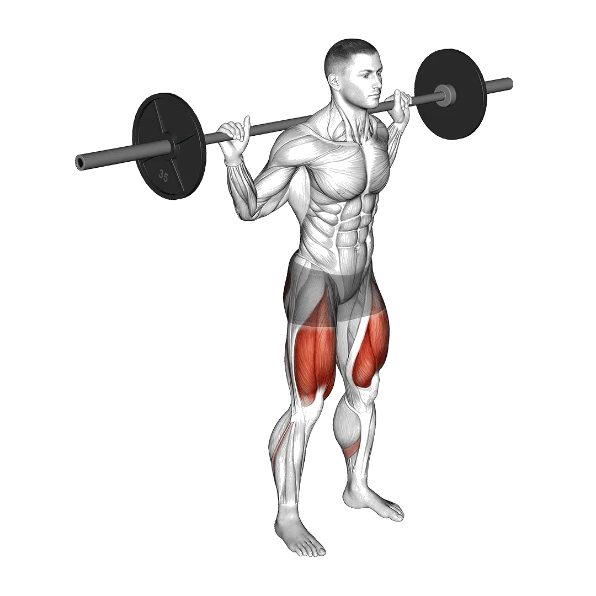

Paused squat
Paused squat menampilkan berat rata-rata dan standar kekuatan sebagai referensi untuk kategori kaki. Otot utama: Quadriceps, Gluteus maximus, Hamstring.

Berat rata-rata: Menengah
Acuan untuk level menengah.
Pria
289 lb
Wanita
164 lb
Berat rata-rata Paused squat [1RM]
| Level | ||
|---|---|---|
| Dasar | 151 lb | 71 lb |
| Pemula | 213 lb | 112 lb |
| Menengah | 289 lb | 164 lb |
| Mahir | 377 lb | 226 lb |
| Pro | 471 lb | 295 lb |
Catatan: standar ini adalah estimasi 1RM berdasarkan lifter rata-rata. Berat badan, usia, dan faktor pribadi lain dapat memengaruhi hasil. Lihat data detail pada tabel di bawah.
Standar kekuatan Paused squat (lb)
Pria berdasarkan berat badan (lb) [1RM]
| Berat badan | Dasar | Pemula | Menengah | Mahir | Pro |
|---|---|---|---|---|---|
| 110 | 79 | 119 | 170 | 230 | 295 |
| 120 | 92 | 135 | 189 | 252 | 321 |
| 130 | 106 | 151 | 208 | 274 | 345 |
| 140 | 119 | 167 | 226 | 295 | 368 |
| 150 | 132 | 182 | 244 | 315 | 391 |
| 160 | 144 | 197 | 261 | 334 | 412 |
| 170 | 157 | 212 | 278 | 353 | 433 |
| 180 | 169 | 226 | 294 | 371 | 453 |
| 190 | 181 | 240 | 310 | 389 | 473 |
| 200 | 193 | 253 | 325 | 406 | 492 |
| 210 | 204 | 266 | 340 | 422 | 510 |
| 220 | 215 | 279 | 354 | 439 | 527 |
| 230 | 226 | 291 | 368 | 454 | 545 |
| 240 | 237 | 304 | 382 | 470 | 561 |
| 250 | 248 | 316 | 396 | 484 | 578 |
| 260 | 258 | 327 | 409 | 499 | 594 |
| 270 | 269 | 339 | 422 | 513 | 609 |
| 280 | 279 | 350 | 434 | 527 | 624 |
| 290 | 288 | 361 | 446 | 541 | 639 |
| 300 | 298 | 372 | 459 | 554 | 653 |
| 310 | 308 | 383 | 470 | 567 | 667 |
Pria berdasarkan usia [1RM]
| Usia | Dasar | Pemula | Menengah | Mahir | Pro |
|---|---|---|---|---|---|
| 15 | 129 | 181 | 246 | 321 | 401 |
| 20 | 147 | 208 | 282 | 367 | 459 |
| 25 | 151 | 213 | 289 | 377 | 471 |
| 30 | 151 | 213 | 289 | 377 | 471 |
| 35 | 151 | 213 | 289 | 377 | 471 |
| 40 | 151 | 213 | 289 | 377 | 471 |
| 45 | 144 | 202 | 274 | 358 | 447 |
| 50 | 135 | 190 | 258 | 336 | 420 |
| 55 | 125 | 176 | 238 | 310 | 388 |
| 60 | 114 | 160 | 217 | 283 | 354 |
| 65 | 103 | 145 | 196 | 256 | 320 |
| 70 | 92 | 130 | 176 | 230 | 287 |
| 75 | 82 | 116 | 158 | 205 | 257 |
| 80 | 74 | 104 | 141 | 184 | 230 |
| 85 | 66 | 93 | 126 | 165 | 206 |
| 90 | 60 | 84 | 114 | 148 | 186 |
Wanita berdasarkan berat badan (lb) [1RM]
| Berat badan | Dasar | Pemula | Menengah | Mahir | Pro |
|---|---|---|---|---|---|
| 90 | 33 | 57 | 91 | 131 | 177 |
| 100 | 42 | 69 | 105 | 149 | 198 |
| 110 | 51 | 81 | 120 | 166 | 218 |
| 120 | 60 | 93 | 134 | 183 | 236 |
| 130 | 70 | 104 | 147 | 199 | 254 |
| 140 | 79 | 115 | 161 | 214 | 271 |
| 150 | 88 | 126 | 173 | 228 | 288 |
| 160 | 97 | 136 | 186 | 243 | 304 |
| 170 | 105 | 147 | 198 | 256 | 319 |
| 180 | 114 | 157 | 209 | 269 | 334 |
| 190 | 122 | 167 | 221 | 282 | 348 |
| 200 | 130 | 176 | 232 | 295 | 362 |
| 210 | 138 | 186 | 242 | 307 | 375 |
| 220 | 146 | 195 | 253 | 319 | 388 |
| 230 | 154 | 204 | 263 | 330 | 401 |
| 240 | 162 | 213 | 273 | 341 | 413 |
| 250 | 169 | 221 | 283 | 352 | 425 |
| 260 | 177 | 230 | 292 | 363 | 437 |
Wanita berdasarkan usia [1RM]
| Usia | Dasar | Pemula | Menengah | Mahir | Pro |
|---|---|---|---|---|---|
| 15 | 61 | 95 | 140 | 193 | 251 |
| 20 | 69 | 109 | 160 | 221 | 288 |
| 25 | 71 | 112 | 164 | 226 | 295 |
| 30 | 71 | 112 | 164 | 226 | 295 |
| 35 | 71 | 112 | 164 | 226 | 295 |
| 40 | 71 | 112 | 164 | 226 | 295 |
| 45 | 68 | 106 | 156 | 215 | 280 |
| 50 | 63 | 100 | 146 | 202 | 263 |
| 55 | 59 | 92 | 135 | 186 | 243 |
| 60 | 54 | 84 | 123 | 170 | 222 |
| 65 | 48 | 76 | 111 | 154 | 200 |
| 70 | 43 | 68 | 100 | 138 | 180 |
| 75 | 39 | 61 | 89 | 123 | 161 |
| 80 | 35 | 54 | 80 | 110 | 144 |
| 85 | 31 | 49 | 72 | 99 | 129 |
| 90 | 28 | 44 | 65 | 89 | 116 |
Catatan: barbell standar di gym umumnya berbobot 44 lb.
Otot yang dilatih
| Grup | Otot |
|---|---|
| Otot utama | Quadriceps, Gluteus maximus, Hamstring |
| Otot pendukung | Adductor, Erector spinae |
| Otot stabilisator | Rectus abdominis, Oblique eksternal, Erector spinae |
| Grip | Tidak ada |
Catat dan analisis di aplikasi Shiba
Lihat beban, repetisi, dan perkembangan di satu tempat.
Cara membaca tabel
| Level | Deskripsi | Distribusi |
|---|---|---|
| Dasar | Menguasai teknik yang benar dan berlatih konsisten minimal 1 bulan. | Bawah 5% |
| Pemula | Berlatih konsisten minimal 6 bulan. | Atas 80% |
| Menengah | Berlatih konsisten lebih dari 2 tahun. | Atas 50% |
| Mahir | Berlatih terencana lebih dari 5 tahun. | Atas 20% |
| Pro | Menekuni latihan ini secara khusus lebih dari 5 tahun. | Atas 5% |